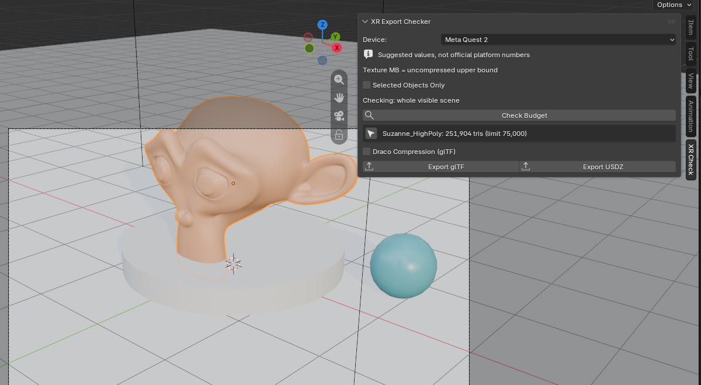
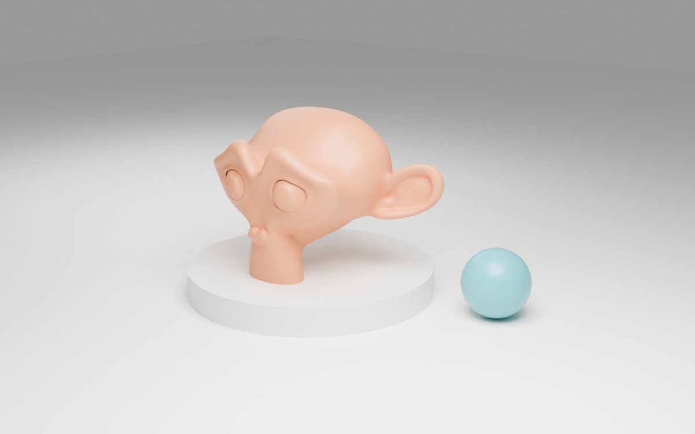
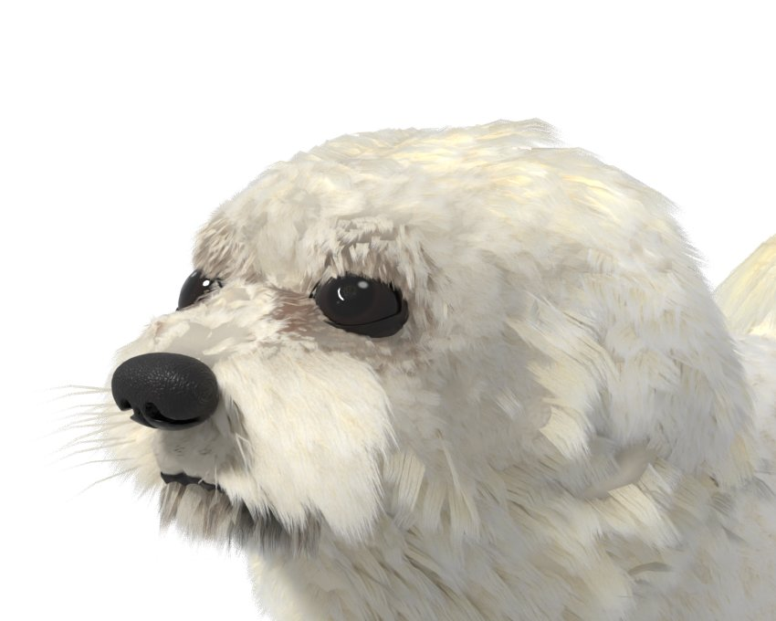
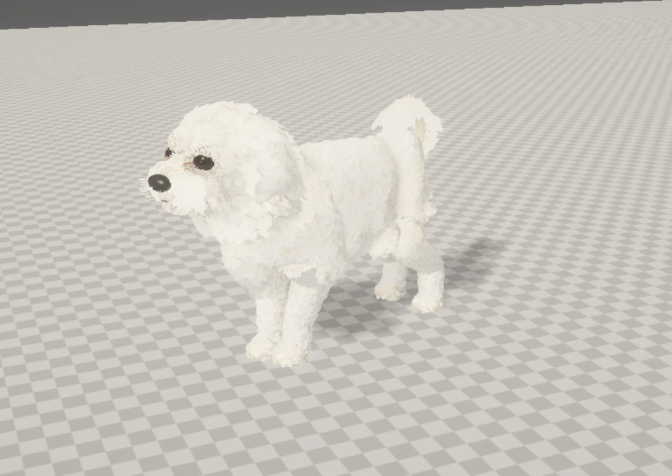
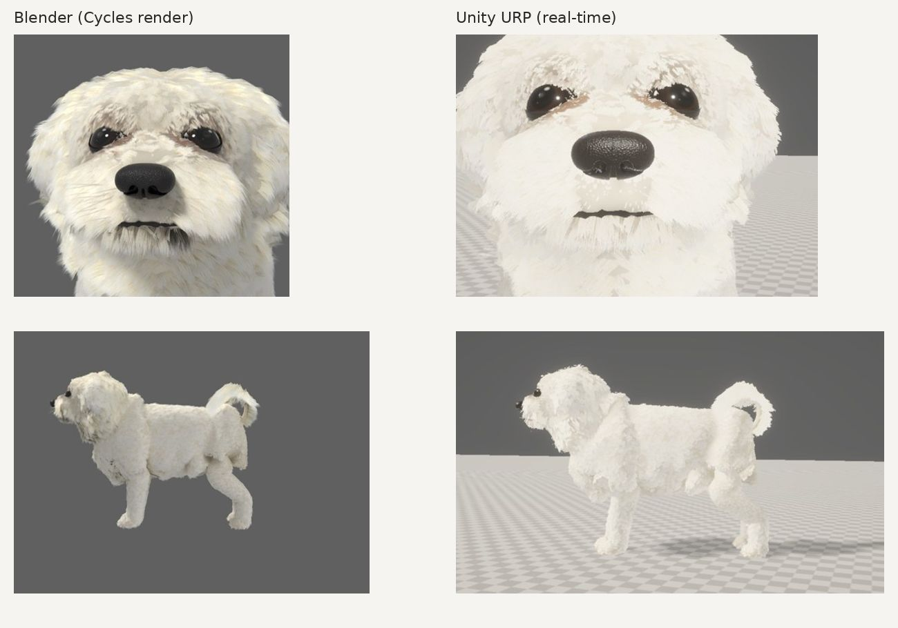

I design and ship software products and Blender tools from Taiwan.
I decide what each product does, review the work, and test it before release. I use AI assistance for parts of the code; every release is checked and approved by me.
台灣的獨立產品開發者，製作軟體產品與 Blender 工具。
XR Export Checker for Blender
In development · planned for SuperhiveChecks a scene against triangle and texture budgets for Meta Quest 2, Meta Quest 3, Apple Vision Pro, or your own Custom limits, then exports glTF/GLB or USDZ with one click.


Device: Meta Quest 2 · Checking: whole visible scene
Found 1 budget problem
Suzanne_HighPoly: 251,904 tris (limit 75,000)
- Per-object and per-scene triangle limits, longest texture side, and texture memory (shown as an uncompressed upper bound)
- Presets are suggested values, not official Meta or Apple numbers; Custom lets you set your own
- Counts meshes, curves, text and collection instances after modifiers
- Export selected objects only; optional Draco compression for glTF
- Warnings for textures inside node groups, missing UV maps, missing image files, and objects USDZ can't carry
- Checks never block export; hidden objects are left out of both the check and the file
- Blender 4.2 LTS and 5.x · works offline, no data collection
Procedural material study
Blender render
Fuqi: a 3D model of my dog from phone photos
Personal projectA 3D model of my own dog, Fuqi, made from ordinary phone photos. TripoSG produced the base mesh. Blender Python scripts then added procedural fur cards, eyes, nose and photo-projected textures, and fitted the model to a licensed third-party 57-bone Shih Tzu rig so it uses that rig's animation set. The result is exported to Unity URP at about 89k triangles and 4 draw calls.
I directed the project and reviewed every version, asking for specific fixes each round. The base mesh is AI-generated, and the Blender scripts were written with AI assistance under my direction.



TallyFu 複帳通
LiveA record-keeping tool for Taiwanese investors who buy US stocks through sub-brokerage: it tracks trades, cost basis, and realized gains. It does not give investment advice. Backend: FastAPI and PostgreSQL. It also has a free FIFO calculator that works without an account.
Kaiye Page 開頁
LiveA website builder with built-in booking for small businesses. A 14-day free trial is open; online payment is not open yet.